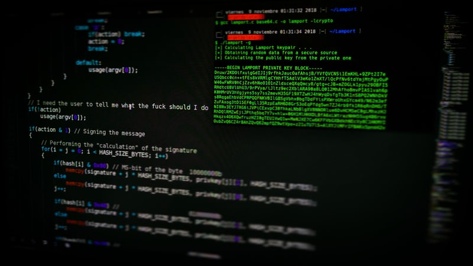

해킹(영어: Hacking)은 타인의 컴퓨터 시스템에 무단 침입하여 데이터에 접속할 수 있는 권한을 얻는 것이다. 전자 회로나, 컴퓨터의 하드웨어, 소프트웨어, 네트워크, 웹사이트 등 각종 정보 체계가 본래의 설계자나 관리자, 운영자가 의도하지 않은 동작을 일으키도록 하거나 체계 내에서 주어진 권한 이상으로 정보를 열람, 복제, 변경 가능하게 하는 행위를 광범위하게 이르는 말로도 쓰인다.
또한 해킹은 크래킹과 개념이 다르다. 해킹이 다른 사람의 컴퓨터 시스템이나 통신망에 정당한 접근 권한 없이 접근하거나 허용된 접근 권한의 범위를 초과하여 침입하는 행위 자체를 의미한다면, 크래킹은 그러한 불법적 접근을 통해 다른 사람의 컴퓨터 시스템이나 통신망을 파괴하는 행위를 일컫는다.